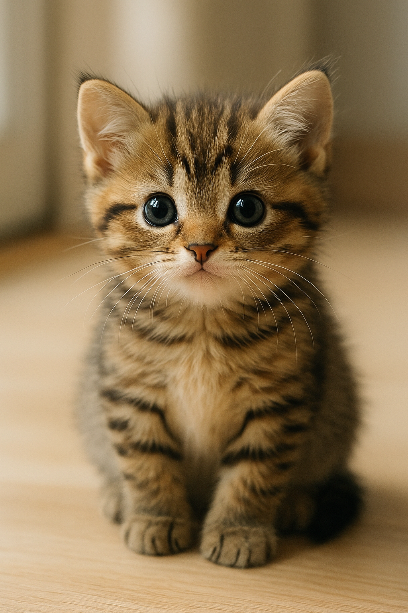

Hello! Welcome to Salt Lake Cat Rescue!
Since 2025 we have been rescuing entirely fake fictional cats and reuniting them with fictional loving owners.
Call us if you want to adopt a kitten!
Kitten of the Week: Charles

Charlie is a loving and playful kitten with spotted brown fur and
a mischievious streak.